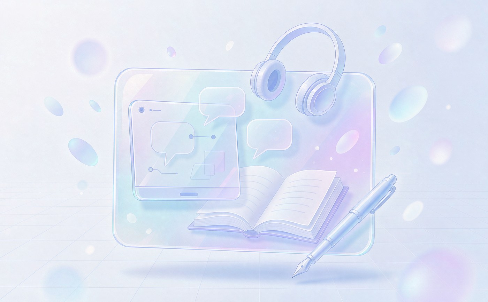

情绪与适应
面对压力与情绪起伏
工作室关注大学生的成长需求，注重个体差异。学业压力、人际关系、情绪起伏与自我认识，都是青年学生在校期间常常面对的课题。
在平等、安静的交流中，先听清学生真实的处境，再一起梳理可行的方向；不替学生作决定，也不让问题悬空。

面对压力与情绪起伏
梳理学习状态与相处困扰
在交流中看清兴趣方向
网络平台答疑与分享
谈心谈话与小组交流
保留长期沟通空间
工作室主持人雷一鸣（雷桂平）为国家二级心理咨询师，曾主编心理学教材两部，长期从事辅导员工作与大学生思想政治教育研究。